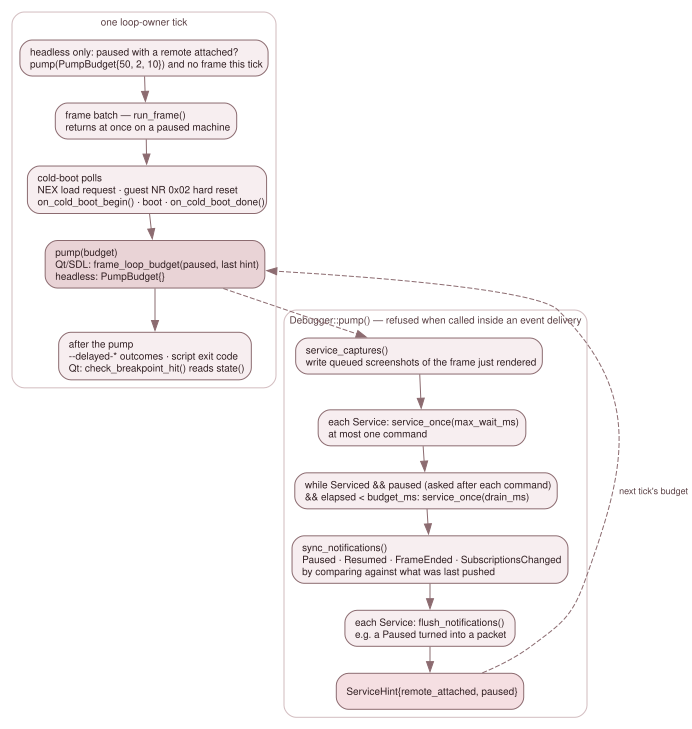
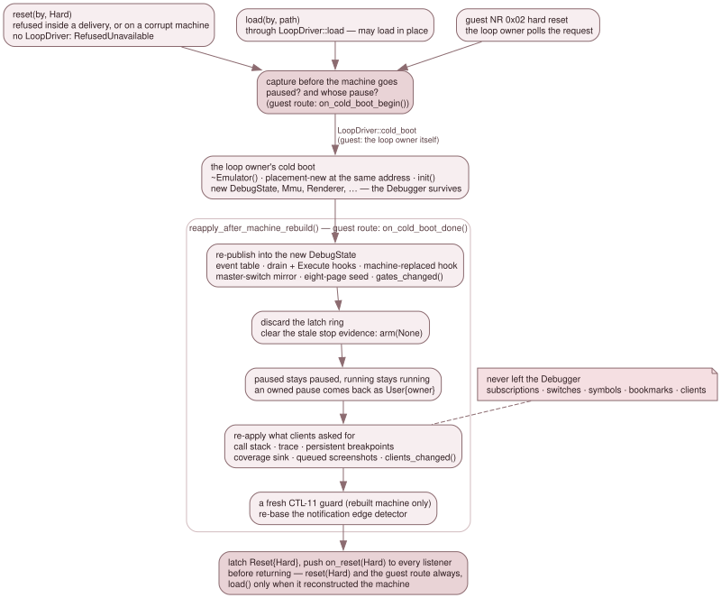

3.9.3 Sessions, the pump and the reconstruct contract¶
The backend does not own a thread and does not own the frame loop. A loop
owner — QtApp's timer tick, the SDL loop, HeadlessApp::run() — owns both.
This page is the seam between them: how a frontend becomes a client, how the
backend talks back to it, when its commands run, and how everything a client set
survives a hard reset that rebuilds the machine under it.
Clients¶
attach(ClientInfo) returns a ClientId. A ClientInfo carries a display
name, a ClientKind and the observer flag:
ClientKind |
Who attaches it |
|---|---|
Gui |
the Qt debugger: one observer client for the life of the GUI, one arming client while the debugger window is open |
Dzrp, Zrcp, GdbRsp |
each protocol server, one client per connected peer session |
Script |
the script engine, the recorder, and ScriptHost's observer listener |
Test |
the test harnesses |
Every verb that mutates or transitions takes the client's id, and every
transition is broadcast with it. The client table holds each client's listener,
its live_raster request, its per-client event switch and its bookmarks. It
lives on Debugger::Impl, outside the Emulator, which is what lets all of it
survive a machine rebuild. Ids are handed out in attach order and never reused.
Attaching arms the machine; an observer does not. attached() is "at least
one arming client is attached". An observer (ClientInfo::observer) is a
client in every other respect — it owns subscriptions, has a listener, issues
verbs, keeps bookmarks — but counts toward no arm bit. Its subscriptions
therefore fire only while something else arms the machine. The Qt GUI's
breakpoints belong to an observer: they outlive the debugger window, fire with
the window shut when --persistent-breakpoints or a remote client arms the
machine, and cost a closed window nothing.
DebugState keeps one bit per arming contributor and ORs them in
refresh_gates_():
clients_attached_: published byclients_changed()from the client table;persistent_:--persistent-breakpoints;replay_armed_: set byDebugState::ReplayArmScopefor the length of a rewind's replay loop;magic_hold_: set when a magic breakpoint fires, released by the resume that ends its stop.
Each contributor has its own bit because a shared one would let one owner's
release clear another's arm. SuspendScope clears all of them. Outside the two
holds, armed() == attached() || persistent_breakpoints().
attached and live_raster are two different gates. attached gates the
step machinery: Step Out's per-instruction test and the STEP_BACK /
RUN_BACK_TO_CYCLE step modes. live_raster — per client, ORed — gates only
the render-every-frame hint and the per-instruction VideoTiming::advance()
walk. refresh_gates_() precomputes both into DebugState bits, so each
hot-path reader pays one bool load, and Debugger::attached() and
live_raster() read the same bits back.
Detaching, and who owns a pause¶
detach(cid) removes the client's subscriptions, its bookmarks and every other
record keyed by its id (its event switch, its unflushed capture failures).
What happens to a pause depends on whose it is.
- The pause is this client's — its
pause(), its step, or aStopon one of its subscriptions. While another arming client remains, the pause passes to it and the machine stays paused;pause_reason.byis rewritten and nothing is pushed. The heir is the client the machine was paused by before the leaver single-stepped it, if that client is still attached (step_into()on a paused machine keeps it inImpl::pause_origin), otherwise the earliest-attached remaining arming client. Only the last arming client out releases the pause, which is what stops a crashed DeZog from leaving the machine hung. - The pause is another client's. It survives.
- The pause is unowned.
PauseReason::MagicandPauseReason::Corruptcarryby == CLIENT_NONE, and no detach ever releases them.
An observer neither inherits a pause nor holds one back from release. The same
rule applies to a pause captured for a guest cold boot that has not completed
yet. The detach is logged on the debugger channel, for example
DETACH client 1 (released its pause).
Listeners¶
set_listener(cid, Listener*) installs a client's push interface. Listener
has seven pure virtual methods; a notification silently ignored by a default
empty override is the failure the design rules out.
| Push | When |
|---|---|
on_paused(PausedInfo) |
the machine stopped: by, reason, cycle, pc, matched[] |
on_resumed(by) |
it started again |
on_reset(kind) |
a reset; a hard one before the verb that caused it returns |
on_frame_ended(frame) |
frames ended since the last pump |
on_subscriptions_changed(kinds) |
the subscription model changed; carries the live kinds |
on_exit_requested(code) |
a Stop under StopPolicy::ExitNonZero |
on_log(level, text) |
every SES-06 line, the MUTATE lines included |
Pushes are synchronous, on the emulation thread, and must do no UI work. The Qt listener records and acts on its own tick.
Paused, Resumed, FrameEnded and SubscriptionsChanged are not pushed at
each transition site. There are many ways into and out of a pause, and a push
at each is the two-lists failure. Instead sync_notifications() compares:
paused();DebugState::resume_generation(), so a stop-resume-stop between two pumps is two pushes rather than none;- the frame's start cycle (
Emulator::current_frame_cycle()), because the first frame run again after a rewind ends without the frame counter moving; EventTable::revision()
against what it last pushed, and pump() calls it. So a stop in this tick's
frames is notified in this tick's pump. Reset is the exception and is pushed
synchronously by the verb, so that an adapter whose client is blocked in a run
can complete the reply.
The pump¶

One loop-owner tick, and what pump() does inside it.
pump(PumpBudget) is the loop owner's once-per-tick service call, made after
the tick's frames and after the cold-boot polls. In order, it:
- writes the screenshots queued for the frame just rendered, before any command of this pump can change the machine;
- drains the registered
Services; - syncs the notifications;
- calls each service's
flush_notifications(); - returns a
ServiceHint{remote_attached, paused}, which the loop owner uses to pick the next tick's budget.
The drain has two arms. While the machine runs, each service is asked for at
most one command whatever the budget says, because the loop owner needs its
thread back for the next frame. While it is paused, the service keeps
answering while the peer keeps talking, bounded by budget_ms. A DeZog ZRCP
step is about fifteen sequential round trips, which at one per tick would take
300 ms. "Paused" is asked after each command, not at entry: a run in the chain
hands the loop owner its frames back at once, and a pause arriving while
running lets the reads behind it be answered in the same pump. budget_ms == 0
therefore means one command, not "unbounded".
DebugServers (src/platform/debug_servers.*) holds the budgets, so all three
loop owners share one statement of them:
| Loop owner | Running | Paused, with a remote attached last tick |
|---|---|---|
| Qt, SDL | PumpBudget{}: one command |
PumpBudget{0, 2, 10}: drain a queued chain, never block the tick |
| headless | PumpBudget{} |
PumpBudget{50, 2, 10}, and no frame that tick |
The headless branch turns what would be a busy spin on a paused machine into a
wait. Its one countdown that keeps running is --delayed-automatic-exit,
charged in wall time at 20 ms a frame, because it is a hard bound and a client
holding the machine must not hold the process. The budgets are the one place in
the backend that reads a wall clock, and legitimately: they are host service
parameters, and nothing in the emulated timeline depends on them.
pump() refuses to run from inside an event delivery, and refuses rather than
asserting: an assert compiles away in the build where a frontend bug would
ship, and re-entering the drain would deliver a boundary's events twice.
The stop policy¶
StopPolicy decides what a Stop verdict does in this frontend, and the loop
owner sets it, never an adapter:
| Loop owner | Policy |
|---|---|
QtApp |
Pause: pause and notify |
SdlApp, HeadlessApp |
ExitNonZero: pause, log, push on_exit_requested(3) |
The SDL frontend has no pause path, and a headless run is a CI verdict.
ExitNonZero becomes Pause while any service has a peer connected, so a
client blocked on run gets its stop reply rather than the process exiting
under it. stop_policy() returns what was set; the override lives at the one
place the policy is consumed. The exit code is 3: never 2, which both test
harnesses use for a harness fault, and never 1, which means "JNEXT could not
run". The backend logs the request at info level. Only the listener that decides
knows which code is taken, so ScriptHost logs the requesting exit 3 warning
when the stop is a script's.
An explicit pause() is a stop that drops the transient subscriptions, but it
is not an Action::Stop, so it never requests an exit.
No verb that drives the machine runs inside a delivery¶
A handler runs with run_frame() still on the stack and the drain walking the
latch ring. So every verb that would do any of the following refuses there with
Unsupported, through one helper (Impl::refuse_inside_delivery()):
- execute the machine: the step verbs, and a save that has to advance to a frame boundary;
- change its run state:
pause,run,step_out, therun_tofamily — each re-arms the stop evidence, which would rewrite the very stop the handler is part of; - rewind or restore it:
step_back,rewind_to_frame,load_state_bytes,bookmark_restore; - reset or replace it:
resetof either kind,load,on_cold_boot_done, and the one NextREG write that resets (NR 0x02 with the soft-reset bit, throughnextreg_writeorport_out).
A handler stops the machine by returning Action::Stop. Mutations are allowed
(see 3.9.2), raise_host_event nests,
and detach is a session verb: its release of the departing client's pause goes
through run()'s body rather than the refused public verb.
How the loop owners host the backend¶
HeadlessApp, SdlApp and QtApp each, in init():
- build one
Debuggerand set the stop policy; - register a
LoopDriverwithset_loop_driver():cold_bootruns the loop owner's own boot sequence, andloadits load dispatch. Both live insrc/platform/, above the backend, so a closure is the only way the backend can reach them; - open the protocol servers the command line asked for (
DebugServers::start()); - start the
ScriptHostfor--script,--script-key,--mapand--record-script.
Every cold boot the loop owner decides on — a guest NR 0x02 hard reset, a NEX
load request, F1, a menu load — is bracketed with on_cold_boot_begin() and
on_cold_boot_done(). The loop owner polls for those requests before it
pumps, so a guest reset and a client's reset(Hard) in the same tick run in
that order. QtApp pumps in post_frames().
With no client attached none of this arms anything, so a run with the backend
is bit-identical to a run without it (debugger_backend_test rows HOST-01..05,
the last three through the real HeadlessApp). Because nothing a normal run
does can show a missing call, the JNEXT_HOST_PROBE fixture
(src/platform/host_probe.h, env-gated, zero cost unset) makes them
observable. It runs a client inside pump() as a Service, exercises the
guest and the client cold-boot paths, and prints one HOSTPROBE line per check.
The regression rows sdl-host-probe-func, qt-host-probe-func and
qt-host-order-func, and backend rows HOST-07 and HOST-08, read those lines.
JNEXT_HOST_PROBE=sdcard:<image> checks the SD-card change poll the same way
(sdcard-swap-func).
The CLI --delayed-* flags keep their own countdowns. Each loop owner
counts loop ticks for them, because a tick count survives a cold boot and keeps
counting while the machine is paused, which keeps --delayed-automatic-exit a
hard bound; a frame tag does neither. Only the actions go through the backend:
press_key, press_nmi (which calls the F9/F10 hotkey functions, gates
included), save_snapshot, and screenshot() through
src/platform/cli_capture.h, whose outcome the loop owner reads back with
flush_captures(CLIENT_NONE).
The reconstruct contract¶
A hard reset is a power-on cold boot the frontend performs.
emulator_frontend_cold_boot() destroys the Emulator, placement-news a new
one at the same address and re-runs init(). &emu stays valid, which is what
lets a Debugger live across it, but every sub-object is new — the
DebugState included. Left alone, a surviving Debugger would be silently
disconnected: every subscription still exists and lists as live, and not one
can ever fire.

The three routes take one capture before the machine goes and run one re-application after it comes back.
Three routes land a new machine, and all three go through
Debugger::Impl::reapply_after_machine_rebuild() (debugger_reconstruct.cpp):
reset(by, Hard)runsLoopDriver::cold_bootsynchronously, insidepump(), so later commands in the same drain see the new machine (a ZRCPhard-reset-cpu→enter-cpu-step→smartloadchain works). With no driver it refuses withRefusedUnavailable. It is subject to the corruption gate like any verb that leaves the machine running;load(by, path)runsLoopDriver::load, which may load in place (emulator_apply_load()), cold-boot first, or re-init()in place. It re-applies unconditionally — the re-application is idempotent on a load that replaced nothing — and tells a rebuild from an in-place load by its own publication: only a brand-newDebugStatecan point anywhere butImpl::events;- a guest NR 0x02 hard reset is performed by the loop owner, which calls
on_cold_boot_begin()just before it destroys the machine andon_cold_boot_done()after.
The capture taken before the machine goes is two facts: was it paused, and whose pause was it. The re-application then:
- re-publishes into the new
DebugStatewhat the constructor published: the event table, the drain andExecutehooks, the machine-replaced hook. The fourth hook, the latch stamper, is theEmulator's, andinit()installs it. It also mirrors the master switch into the newBreakpointSet, seeds the eight live slot pages (they were discarded duringinit(), while the table pointer was null) and callsgates_changed(), the only writer of the event-mask half of the hot-path gate across a boot; - clears the latch ring — it lives on
Impl, so it survives, while everything in it describes a machine that is gone — and armsPauseReason::Kind::None, becauseinit()reconciled the stop evidence while the hook was still null; - re-applies the pause: paused stays paused, running stays running. There is no
Resetpause reason, so a client's hard reset never pauses a running machine. A pause a client owned comes back asUser{that client}, so its detach can still release it; an unowned pause stays unowned; - re-applies what clients asked for: call-stack tracking, the trace and
persistent_breakpointsfrom the backend's own record of each request (Impl::want_*, empty until a client sets it, so a machine nobody configured keeps its defaults), the coverage sink, the queued screenshots' hold on the new renderer (each capture's wait re-based on the new machine's frame counter), and each client's arm bit andlive_rasterthroughclients_changed(); - starts a fresh CTL-11 corruption guard on a rebuilt machine, whose error generation restarts at 0, so an old acknowledgement cannot pre-acknowledge its first corruption;
- re-bases the notification edge detector on the new machine, whose resume
generation and frame counter restarted. Every route first flushes the old
machine's pending pushes, so re-basing loses nothing; the exception is a
donewith nobegin, whose machine is gone before the backend hears of it.
Subscriptions, switches, the symbol table and bookmarks need nothing: they never
left the Debugger. Then the Reset{Hard} event is latched — after the ring
discard, or it would go with the stale entries — and on_reset(Hard) is pushed
to every listener before the verb returns: always for reset(Hard) and the
guest route, and for load() only when it rebuilt the machine.
The guest-route pair is pinned state by state: begin then done keeps the
pause and its owner; done without a begin re-applies the rebuilt machine's
own state, unowned; a second begin replaces the first; a reset(Hard) or
load() in between discards a pending capture; a detach of the capture's owner
passes the captured pause on, or releases it; and neither call needs a driver or
refuses on a corrupt machine.
emulator_cold_boot() carries nothing of the debugger's across a boot: the
backend is the single owner of everything it re-applies.
Tests¶
debugger_backend_test pins the session (SES-01-* attach and detach,
SES-02-* the pushes and the edge detector, SES-03-* the drain arms), the
reconstruct contract (CTL-12-*, CTL-15-*), the destructor's retirement of
what the constructor published (LIFE-*), and the hosting (HOST-*).
remote_transport_test's XPT-PUMP rows drive the real transport through
pump().